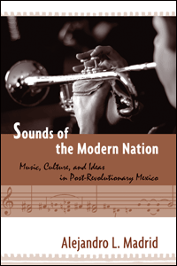

<body bgcolor="#FFFFFF" text="#000000" link="#0000FF" vlink="#CC0000" alink="#CC0000"><center><hr width="350" size="1" align="center" noshade>How the relationships between avant-garde music and ideas of modernity in post-revolutionary Mexico shaped discourses of nationality<hr width="350" size="1" align="center" noshade><p><a href="https://cdcshoppingcart.uchicago.edu/Cart/ChicagoBook.aspx?ISBN=9781592136940&&PRESS=temple" target="_top">Buy this book!</a> | <a href="https://cdcshoppingcart.uchicago.edu/Cart/Cart.aspx?PRESS=temple" target="_top">View Cart</a> | <a href="https://cdcshoppingcart.uchicago.edu/Cart/Cart.aspx?PRESS=temple" target="_top">Check Out</a></p><p></p></center><!--none//--><h1>Sounds of the Modern Nation</h1>
<H2>Music, Culture, and Ideas in Post-Revolutionary Mexico</H2>
<h3>Alejandro L. Madrid</h3>
<P><BR> 224 pp
5.5x8.25
3&nbsp;tables 36&nbsp;figures
</P><h3 align="center"><P><font color="#996633">Winner of the International Casa de las Am�ricas Musicology Prize,
2005</font></P>
</H3>
<P><I>Sounds of the Modern Nation</I> explores the development of modernist and avant-garde art music styles and aesthetics in Mexico in relation to the social and cultural changes that affected the country after the 1910-1920 revolution. Alejandro Madrid argues that these modernist works provide insight into the construction of individual and collective identities based on new ideas about modernity and nationality. Instead of depicting a dichotomy between modernity and nationalism, Madrid reflects on the multiple intersections between these two ideas and the dialogic ways through which these notions acquired meaning.</P>
<P>Madrid challenges the view that Latin American modernist music and other art were mere imitations of European trends, advancing instead the argument that Latin American artists resignified European ideas according to their specific historical and cultural circumstances. His work shows how microtonal and futurist music, modernist and avant-garde aesthetics, as well as indigenist and indianist ideas, entered a process of negotiation that ultimately shaped the ideological framework of twentieth-century Mexico.</P>
<BR>&nbsp;<h2>Excerpt</h2><P>Excerpt available at <a href="http://www.temple.edu/tempress">www.temple.edu/tempress</a></p>
<BR>&nbsp;<h2>Reviews</h2>
<p><i>"[I]t is not necessary to be a musician to appreciate and comprehend many of Madrid's arguments. At every turn in this brilliant, challenging and beautifully structured book, Madrid pushes for complexity over simplification, and for the importance of individual artistic identity over that of aesthetic movements, or the hegemonic power of either history or the state. </i>Sounds of the Modern Nation<i>...makes fascinating reading for those with an interest in Mexican cultural history. And for musicologists of all stripes, it is indispensable for understanding how Mexican music achieved modernity."</i><br>&#151;<b><i>The Hispanic Outlook in Higher Education</i></b>
<P><I>"One of the strengths of Madrid's study is his interdisciplinary approach, which draws on elements of anthropology, musicology, and semiology....Summing Up: Recommended." </i><br><b>&#151 Choice</b>
<p><i>"In this compact and insightful book, Alejandro Madrid examines an elite group of early
twentieth-century Mexican composers at a critical time in the nation�s cultural history, the 1920s.... </i>Sounds of the Modern Nation<i> reveals much not only about the politics of culture but also about the often contentious process of writing national history."</i>
<br>&#151<b><i>Hispanic American Historical Review</i></b>
<p><i>"</i>Sounds of the Modern Nation<i> makes an invaluable contribution to studies dealing with avant-garde and modernist music in the postrevolutionary era." </i>
<br>&#151<b><i>Ethnomusicology</i></b>
<P><I>"Madrid demonstrates a vibrant interdisciplinary approach informed by critical cultural history, Latin American studies, cultural studies, linguistics, anthropology, and sociology that complements the specialized musical analyses. This work contributes to important discussions about music and national sentiment, modernism in Latin America, 'tradition,' 'authenticity,' 'imitation,' identity, transculturation, and the construction of discourse." </i><br><b>&#151 The Journal of Popular Music Studies</b>
<P><I>"</i>Sounds of the Modern Nation<i> is an engaging, fresh, and accessible contribution to Latin American musicology and cultural studies in general. The conception of the project, as well as its execution, has rightfully earned it the award it received. [The International Casa de las Am�ricas Musicology Prize in 2005] Through the study of art music in the post-revolutionary Mexico of the 1920s and 1930s, Madrid provides an interesting case study of the development of cultural nationalism in Latin America. It may thus interest, beyond musicologists, scholars of Mexican history, music, and culture, as well as readers interested in identity and canon formation, transculturation, nationalism, indigenism, modernism, and avant-gardism in Latin America." </i><br><b>&#151 Latin American Musical Review</b>
<BR>&nbsp;<h2>Contents</h2><P>
<br>Acknowledgements
<br>Introduction: History, Ideas, Musical Writing, and the Writing of Music
<br>1. Modernism, Teleology, and Identity: Toward a Cultural Understanding of Julian Carillo's Sonodo 13
<br>2. The Avant-Garde as a Site of Identification: Style and Ideology in Carlos Chavez's Early Music
<br>3. Manuel M. Ponce, from Nineteenth-Century <I>Modernismo</I> to Twentieth-Century Modernism
<br>4. The Sounds of the Nation, Modernity, and Tradition: The First National Congress of Music as Synecdoche of Discourses
<br>5. Porfirian Music in Revolutionary Times: <I>Atzimba</I> and the Imagination of "the Indigenous"
<br>6. Ideas, Canon, Revolution, and Places in History: Carlos Chavez and His Relationships with Julian Carrillo and Manual M. Ponce
<br>Notes
<br>Bibliography
<br>Index
</P><BR>&nbsp;<H2>About the Author(s)</H2>
<table><tr><td valign="top"><img src="/tempress/authors/1930_au.gif" height="90" width="75"></td><td width="100%" valign="middle"><p><b>Alejandro L. Madrid</b> is Assistant Professor of Latin American and Latino studies at the University of Illinois, Chicago. He is the author of <I>Nor-tec Rifa! Electronic Dance Music from Tijuana to the World</I> and co-editor (with Ignacio Corona) of <I>Postnational Musical Identities. Cultural Production, Distribution, and Consumption in a Globalized Scenario.</I></P></td></tr></table>
<BR><H2>Subject Categories</H2>
<p><A HREF="/tempress/music.html" TARGET="_top">Music and Dance</a>
<BR><A HREF="/tempress/latin.html" TARGET="_top">Latin American/Caribbean Studies</a>
<BR><A HREF="/tempress/cultural.html" TARGET="_top">Cultural Studies</a>
</p>
<BR><h2 class="inpageheading">In the series</H2>
<P><I><a href="http://www.temple.edu/tempress/latin_music.html" onMouseOver="window.status='Click for other books in this series!'; return true;" onMouseOut="window.status=''; return true;" target="_top">Studies in Latin American and Caribbean Music</a></i>, edited by Peter Manuel.
</p><p><i>Studies in Latin American and Caribbean Music</i>, edited by Peter Manuel, aims to present interdisciplinary studies in the traditional and contemporary musics of Latin America and the Caribbean.</p>
<p align="center"><a href="https://cdcshoppingcart.uchicago.edu/Cart/ChicagoBook.aspx?ISBN=9781592136940&&PRESS=temple" target="_top">Buy this book!</a> | <a href="https://cdcshoppingcart.uchicago.edu/Cart/Cart.aspx?PRESS=temple" target="_top">View Cart</a> | <a href="https://cdcshoppingcart.uchicago.edu/Cart/Cart.aspx?PRESS=temple" target="_top">Check Out</a></p><p><font face="Arial" size="1"><a href="copyright.html" onMouseOver="window.status='Web Copyright Policy';return true;" onMouseOut="window.status=''" title="Web Copyright Policy">&copy;</a> 2015 <a href="http://www.temple.edu" target="new" onMouseOver="window.status='Link to Temple University home page';return true;" onMouseOut="window.status=''" title="Link to Temple University home page">Temple University</a>. All Rights Reserved. http://www.temple.edu/tempress/titles/1930_reg.html</font></p>